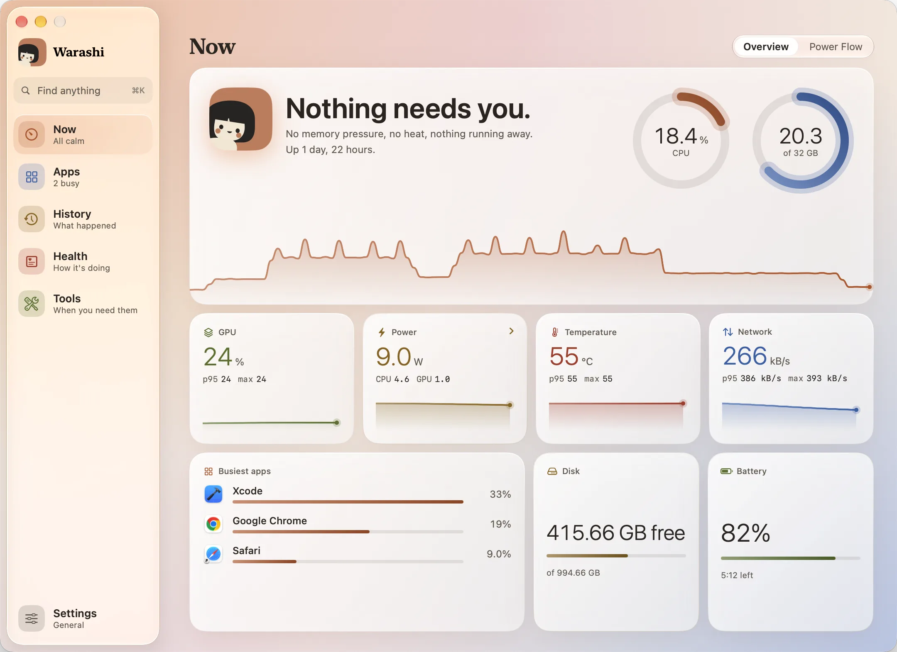
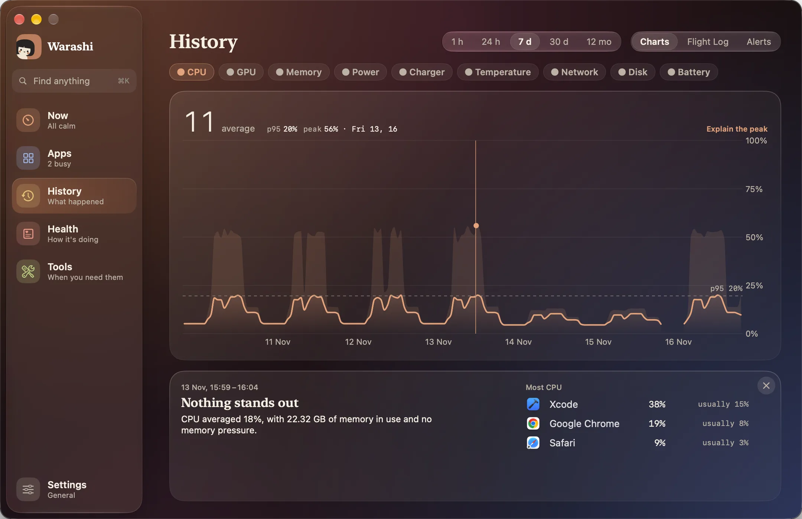
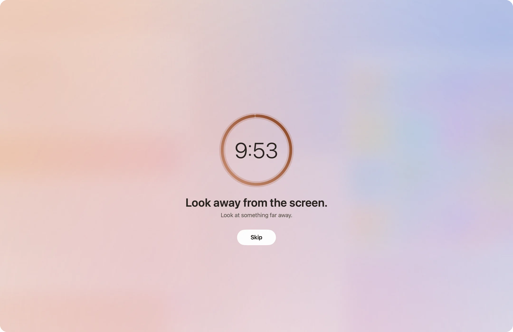

الروح التي تعتني بجهاز Mac.
يراقب Warashi جهاز Mac، ويُبقي بطاريته فتيّة وقرصه نظيفًا، ويخبرك لحظة حدوث خلل، ويذكّرك بأن ترتاح. تطبيق واحد هادئ في شريط القوائم بدل أحد عشر.
Apple silicon · macOS 26 أو أحدث · إصدار تجريبي مجاني · دون حساب


العناية · البطارية
مثبّت عند 80%.
يشيخ أبطأ بسنوات من بطارية تبقى عند 100%.
تنظيف · التنظيف
7.2 GB آمنة للتنظيف
ذاكرة التخزين المؤقت للتطبيقاتالمتصفحاتالسجلاتالمطوّر
راحة · الاستراحات
0:15
أبعد نظرك عن الشاشة.
الفحص
كل شيء بخير.
اعرف · التنبيهات
 Google Chrome9.8 GB
Google Chrome9.8 GB
الذاكرة تنفد. أنهِه، أو دعه.
اعرف · السجل
لماذا كان بطيئًا في 14:02؟
كان Xcode يستخدم معظم المعالج.
للمطوّرين
$ warashi agents Claude Code working · 62% left Codex done · my-app
اعرف
يعرف Mac لديك عن ظهر قلب.
روح واحدة ورقم واحد في شريط القوائم، ورقمان بجانب النتوء، وقراءة كل خمس ثوانٍ، محفوظة لمدة سنة. وحين يحدث شيء، يكون Warashi يعرف السبب أصلًا.



مرة واحدة فقط
تطبيق خارج عن السيطرة، أو ذاكرة قليلة، أو حرارة، أو قرص يمتلئ.
مرة واحدة لكل مشكلة، مع الدليل وشيء واحد تفعله.
سجل الرحلة · أمس
- الموسيقى أبقت Mac مستيقظًا 55 دقيقة
- كان جهاز Mac بطيئًا لمدة 6 دقائق كان Xcode يستخدم معظم المعالج.
- ذاكرة Google Chrome تنمو بسرعة زادت 1.35 GB في الساعة الأخيرة.
- شُحنت حتى 100%، متجاوزة حد 80%


العناية
يُبقي Mac لديك شابًا.
بطارية تُحفظ عند 80% تدوم سنوات أطول. وفحص أسبوعي يكتشف المشكلة قبل أن تكلّفك. وحين يحين وقت Mac جديد، يعرف Warashi بالضبط ما تحتاجه.


$249
كلفة بطارية MacBook Pro متهالكة لدى Apple، خارج الضمان. البطارية التي تبقى عند 100% وهي دافئة هي الأسرع تآكلًا.


مستشار الترقية
هل يحتاج Mac القادم لديّ إلى 32 GB؟
بعد 30 يومًا من استخدامك الفعلي، يخبرك Warashi كم تحتاج من الذاكرة والتخزين في Mac التالي، وهل يفيدك معالج أسرع. بالدليل، لا بتخمين عند الدفع.
تنظيف
يُبقي قرصك خفيفًا.
شاهد ما يملأ القرص، وامسح ما يعود من تلقاء نفسه بنقرة واحدة، وأزل التطبيقات مع كل ما تركته خلفها. كل ذلك ينتقل إلى سلة المهملات، فلا يضيع شيء بالخطأ.
التنظيف
كل ما يمكن التخلص منه، بحسب درجة الحذر المطلوبة.
- آمن للتنظيفذاكرة التخزين المؤقت للتطبيقات والمتصفحات، والسجلات، وبيانات بناء Xcode. تعود من تلقاء نفسها.7.2 GB
- انظر أولًامثبّتات قديمة، ونسخ ثانية من التنزيلات، ونسخ مرفقات Mail.1.4 GB
- تعامل بحذرالنسخ الاحتياطية لـ iPhone وiPad، وقد تكون النسخة الوحيدة.38 GB


إلغاء التثبيت
أزل التطبيقات كما ينبغي.
كل تطبيق مع ما تركه في مكتبتك، والتي لم تفتحها منذ أشهر أولًا. إضافة إلى بقايا تطبيقات حذفتها منذ سنوات.
لا ملفاتك أبدًا
أسماء وأحجام وتواريخ فقط.
لا يفتح Warashi أي مستند أبدًا. الوصول الكامل إلى القرص اختياري.
سلة المهملات
أُفرغت. تحرّر 4.8 GB.
تنبيه حين تكبر سلة المهملات، والرقم الحقيقي حين تفرغها.
راحة
وهو يعتني بك أيضًا.
استراحات لطيفة لعينيك وظهرك، وشاشة أهدأ حين تحتاج إلى التركيز، وMac يبقى مستيقظًا بقدر ما يحتاجه العمل بالضبط.


إبقاء الجهاز مستيقظًا
لمدة ساعة، أو حتى ينتهي العمل، أو والغطاء مغلق.
لتنزيل أو بناء أو عرض تقديمي.
التفاصيل الصغيرة
- سرعة الإنترنت والقرص
- جودة Wi-Fi
- شاشة سوداء للتنظيف
- إخفاء أيقونات سطح المكتب
- كتم الميكروفون
- إخراج الكل


للمطوّرين
ما الذي على هذا المنفذ؟ كم يكلّف ذلك الوكيل؟
Claude Code وCodex وCursor: ما يفعله كلٌّ منها، وكم بقي من حدّك، وتنبيه خفيف في النتوء حين يحتاج إليك أحدها. وخوادم التطوير مرتبة بالمشروع، وDocker، ونماذج الذكاء الاصطناعي المحلية في الذاكرة، والغيغابايتات التي تتركها أدواتك.


أمر warashi
$ warashi explain 14:30 Memory ran short Swap rose from 1.2 GB to 8.6 GB. $ warashi apps --hours 3 Xcode CPU 37m 35s 9.4 GB Safari CPU 26m 22s 6.1 GB
واتصال MCP اختياري للقراءة فقط، ليجيب Claude وCursor وتطبيقات الذكاء الاصطناعي الأخرى من سجل الـ Mac. لا يُشارَك شيء ما لم تضفه.
تطبيق هادئ واحد، حيث كان هناك درج كامل منها.
للحصول على كل ما يفعله Warashi، عليك تثبيت أحد عشر تطبيقًا. هذا هو ذلك الدرج، بأسعار موقع كل شركة. لا شيء ضدها: فهي بارعة في مهمتها الواحدة.
- قراءات مباشرة في شريط القوائم، مع سجلiStat Menus 7$11.99مرة واحدة
- تنظيف، ومزيل تثبيت، والبقايا، وفحص البرمجيات الخبيثةCleanMyMac$39.95في السنة
- خريطة لما يملأ قرصكDaisyDisk$9.99مرة واحدة
- الملفات المكررةGemini 2$19.99في السنة
- حد الشحن، والشحن الكامل، وجدول زمنيAlDente Pro€11.49في السنة
- صحة البطارية على مدى الأشهرcoconutBattery Plus€9.95مرة واحدة
- الاستراحات وتذكيرات الوضعيةLookAway$19مرة واحدة
- التركيز الناعم: كل شيء ما عدا نافذتك، معتَّمHazeOver$4.99مرة واحدة
- أبقِ الجهاز مستيقظًا، حتى مع إغلاق الغطاءAmphetamineمجاني
- حدود Claude Code وCodex وCursorCodexBarمجاني
- تنظيف Xcode والمحاكياتDevCleaner for Xcodeمجاني
- أي لحظة من العام الماضي مشروحة، وكم يستهلك كل تطبيق من الطاقةلا يبيع هذا أي تطبيق–
≈ $130في السنة الأولى، ثم ≈ $73 كل سنة بعد ذلك
كلفة الأحد عشر معًا، لجهاز Mac واحد. ثلاثة منها اشتراكات، ولكلٍّ منها إعداداته وتحديثاته وعنصره في شريط القوائم.
$0 أثناء الإصدار التجريبي من Warashi
كل ما سبق، في تطبيق واحد. سيكون Warashi 1.0 عملية شراء لمرة واحدة. بلا اشتراك، أبدًا. ينتقل سجلك وإعداداتك معك.
الأسعار من موقع كل شركة أو من Mac App Store في نوفمبر 2026، لجهاز Mac واحد؛ وأسعار اليورو محوّلة بنحو 1.15 دولار لليورو. وتختلف حسب المنطقة والعروض. كل تطبيق هو الذي كنا سنختاره لذلك الجزء: بعضها يفعل أكثر من Warashi هناك، وWarashi لا يفعل كل ما تفعله.
0.2%
من نواة واحدة في الخلفية. ولا شيء إطلاقًا أثناء نوم شاشاتك.
60MB
من الذاكرة، عادةً، والنافذة مغلقة. مبني بلغة Swift الأصلية لمعالجات Apple silicon.
0 حسابات
نزّل، افتح، وانتهى الأمر. سجلك لا يغادر Mac أبدًا.
خصوصية بالتصميم
- بلا حساب، وبلا سحابة، وبلا قياسات عن تطبيقاتك أو ملفاتك.
- لا تسجيل للشاشة، ولا ضغطات مفاتيح، ولا محتوى ملفات، أبدًا.
- إحصاءات استخدام مجهولة فقط، مذكورة في جولة الترحيب. ما يُرسَل بالضبط
شاهده في دقيقتين.
أسئلة وجيهة.
ما هو «واراشي»؟
في الفولكلور الياباني، «زاشيكي-واراشي» روح بيت صغيرة. ويُقال إن البيت الذي تسكنه يزدهر. وروحنا تسكن شريط القوائم لديك وتعتني بـ Mac.
على أي أجهزة Mac يعمل؟
أجهزة Mac بمعالج Apple silicon (M1 وما بعده) مع macOS 26 أو أحدث.
هل هو مجاني؟
مجاني أثناء الإصدار التجريبي. سيكون Warashi 1.0 عملية شراء لمرة واحدة، بلا اشتراك. ينتقل سجلك وإعداداتك معك.
هل يمكنني الإبقاء على AlDente أو CleanMyMac؟
يمكنك ذلك، لكن مديرَي شحن سيتنازعان على الحد، فاحتفظ بواحد. يخبرك Warashi عندما يرى آخر يعمل.
هل يبطّئ Mac لديّ؟
لا. نحو 0.2% من نواة واحدة في الخلفية و60 MB من الذاكرة، تُقاس وتُعرض في الإعدادات.
ما الفرق بينه وبين مراقب النشاط؟
يعرض مراقب النشاط هذه الثانية. أما Warashi فيتذكر ما حدث وأنت لا تنظر، ويخبرك حين يهم الأمر، ويعتني بالبطارية والقرص وبك.

صنعه شخص واحد، بعناية.
مرحبًا، أنا Adam، مطوّر مستقل. Warashi مشروعي الخاص: التطبيق وتصميمه وهذا الموقع. أريده أن يكون تطبيق Mac الذي أحب أن أستخدمه بنفسي: هادئًا، وصادقًا في أرقامه، وخفيفًا على Mac لديك. إن كانت لديك فكرة، أو كان شيء ما غير سليم، فراسلني.
Adam
دع روحًا هادئة
تعتني بـ Mac لديك.
مجاني ما دام Warashi في مرحلة تجريبية. تنزيل واحد صغير، بلا حساب، ومن الليلة يصبح لـ Mac من يعتني به.